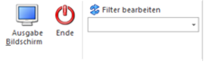

Über den Menüpunkt
1 Auswertungen
1 Stammdatenauswertungen
1 Arbeitnehmerstamm
1 Arbeitnehmer Stammblatt
kann für jeden AN ein Stammblatt gedruckt werden, das alle wichtigen Daten des AN enthält.
Einschränkungen
Ø Arbeitnehmer von - bis
Die Arbeitnehmer können eingegrenzt werden. Wie die AN-Nummer eingegeben werden kann, dazu gibt es mehrere Möglichkeiten. Details dazu entnehmen Sie bitte dem Kapitel Aufruf einer AN-Nummer.
Ø Betrieb von - bis
Die Auswertung kann zusätzlich auf Betriebsnummer eingeschränkt werden - es werden dann nur die AN angezeigt, die im ausgewählten Betrieb abrechnet wurden.
Ausgabe von
In diesem Bereich kann entschieden werden, welche Datenbereiche am AN-Stammblatt mit angedruckt werden sollen. Dabei stehen folgende Optionen zur Verfügung, wobei standardmäßig immer alle vorgeschlagen werden:
ü Stammblatt
Neben dem Namen und
der Adresse des AN werden auch alle anderen Stammdaten wie Krankenkasse,
Finanzamt, SV-, LST-Parameter udg angedruckt.
ü auto. Lohnarten
Wenn diese
Option aktiv ist, dann werden auch alle beim AN hinterlegten Lohnarten mit ihren
Gültigkeiten am Stammblatt angedruckt.
ü Konstanten
Wenn diese Option
aktiv ist, dann werden auch alle beim AN hinterlegten Konstanten mit ihren
Gültigkeiten am Stammblatt angedruckt.
ü nur aktuelle
Diese Checkbox
wirkt nur im Zusammenhang mit der Option "Konstanten". Wird diese Checkbox
aktiviert, dann werden nur die Konstanten angedruckt, die in der aktuellen
Abrechnungsperiode gültig sind. Ist die Checkbox nicht aktiv, dann werden alle
vorhandenen Konstanten angedruckt.
ü Durchschnitte
Wenn diese Option
aktiv ist, dann werden auch alle Durchschnitte des aktuellen Abrechnungsjahres
am Stammblatt angedruckt.
ü Angehörige
Wenn diese Option
aktiv ist, dann werden auch alle Angehörigen des AN am Stammblatt
angedruckt.
ü Pfändungen
Mit dieser Option
werden alle Pfändungstitel, die beim AN hinterlegt sind, mit angedruckt.
ü Zusatzfelder
Wenn diese Option
aktiv ist, dann werden auch alle Zusatzfelder des AN am Stammblatt
angedruckt.
ü Eigenschaften
Wenn diese Option
aktiv ist, dann werden auch alle Eigenschaften des AN am Stammblatt
angedruckt.
ü Journalform
Normalerweise wird
das AN-Stammblatt so ausgedruckt, das jeder AN auf einer neuen Seite beginnt.
Wenn die Option Journalform aktiviert ist, dann wird der Seitenumbruch pro AN
unterdrückt, die Daten werden dann nach der Reihe ausgegeben.
Zusätzlich kann noch eine Einschränkung über den sogenannten Filter durchgeführt werden.
Buttons

Ø Ausgabe
Aus der Auswahllistbox kann gewählt werden, ob die Ausgabe am Bildschirm oder am Drucker durchgeführt werden soll. Standardmäßig wird die Ausgabe auf Bildschirm vorgeschlagen, die auch durch Drücken der F5-Taste gestartet werden kann.
Wurde ein Filter gewählt, werden die entsprechenden Einstellungen berücksichtigt. Durch Drücken der ESC-Taste wird das Fenster geschlossen.
Der Ausdruck enthält im Wesentlichen alle Stammdaten des AN, wobei auch die Lohnarten, die Konstanten und die Durchschnitte mit angedruckt werden. Sollte es aufgrund der Anzahl der Lohnarten, Konstanten und/oder Durchschnitte erforderlich sein, wird ggf. eine zweite bzw. xte Seite ausgegeben.
Ø Ende
Durch Drücken des Buttons "Ende" bzw. der Taste ESC wird der Programmbereich geschlossen.
Ø Filter bearbeiten
Wird der Filter-Button angeklickt, kann ein neuer Filter definiert oder ein bestehender Filter gewählt werden. Dort kann eingestellt werden, nach welchen frei definierbaren Kriterien die Liste eingeschränkt und/oder sortiert werden soll (Details entnehmen Sie dem Kapitel Filter - Assistent.)
Wurden in diesem Fenster bereits Filter angelegt, kann aus der Auswahllistbox ein bestehender Filter gewählt werden. Es werden immer nur die Filter angezeigt, die für das gerade aktive Fenster angelegt wurden.